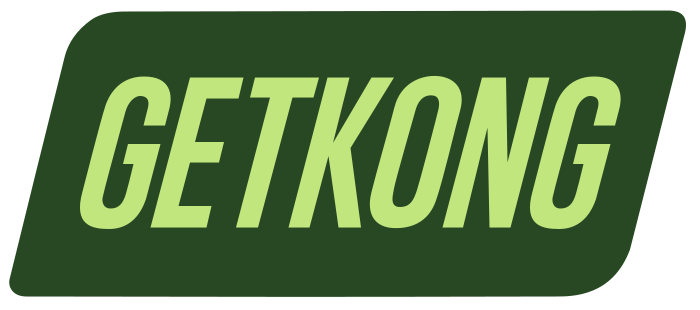

Brokkoli wird verladen…
A
weiter
—
0
m
0
0
0 m
LVL 1
0
km/h
0
Turbo
Pause
Esc oder Leertaste — weiter
Bordstein!
Springen
= Lieferung
Ding Dong.
Level up · +100 m
GAS
BREMS
Sprung

Runner
Nr.
0001
Let’s Go
E-Mails zu Produkten und Aktionen sind okay. Jederzeit widerrufbar.
Datenschutz
◀
▶
▲
▼
Leertaste
Lenken · Gas · Bremse · Springen & Liefern
Daumen links
Sprung rechts
Seitlich lenken · hoch Gas · runter bremsen · loslassen hält das Tempo
Stick
B
Start
Stick lenkt und gibt Gas · B springt & liefert · Start pausiert
Controller verbunden —
✕
oder
Options
Für Ton einmal ins Bild klicken
Let’s Go
Aktuell
Cannafair
Alle Zeiten
Fiktives Spiel. Wirf zuhause bitte kein Gemüse in fremde Fenster.
Impressum
·
Datenschutz
·
AGB
Bestenliste
Aktuell
Cannafair
Alle Zeiten
Wird geladen…
Mehr anzeigen
Let's Go
Zurück
getkong.world · Cannafair
—
Angemeldet
Autsch.
Weiter geht's
⟳
0 m
Platz wird ermittelt…
Deine drei Versuche
0 m
gefahren
0
Lieferungen
0
Brokkoli
1
Level
Best Runners of the Day
—
Zum Start
Bestenliste
getkong.world · Cannafair
—